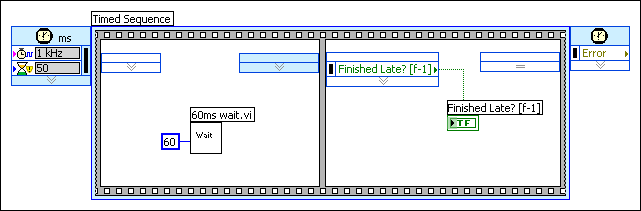
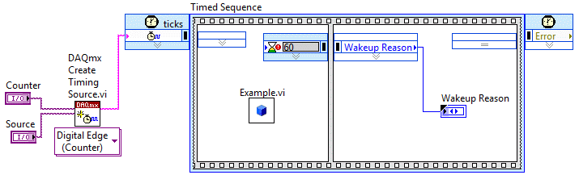
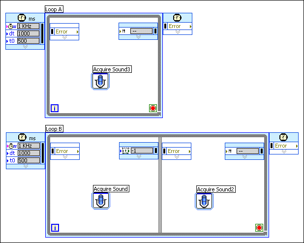
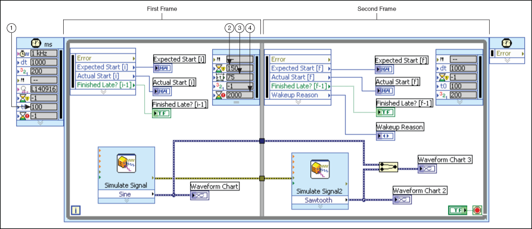

You can use the configuration dialog boxes of timed structures to configure advanced settings such as deadlines, timeouts, and secondary timing sources for timed structures. Double-click the Input node or right-click the Input node and select Configure Input Node from the shortcut menu to display the Configure Timed Loop, Configure Timed Sequence, or Configure Timed Loop with Frames dialog box.
A deadline allots a specific amount of time for a subdiagram, or frame, to complete execution, relative to the start of the frame. Use a deadline to set a time limit reference for the execution of a subdiagram. If a frame does not complete before the deadline, the Left Data node of the next frame returns TRUE in the Finished Late? output and continues to execute. Specify a deadline value in the same units as the frame timing source.
In the following example, the first frame of the Timed Sequence structure is configured with a deadline of 50. The deadline specifies that the frame must complete execution before 50 ticks of the 1 kHz clock, or 50 ms. However, since there is a VI in the frame calling for a 60 ms wait, the code in the frame takes 60 ms to complete. The Finished Late? output of the second frame will return TRUE because the frame execution does not meet the specified deadline.

A timeout specifies the maximum amount of time, in milliseconds, a frame can wait to begin execution. The timeout value is relative to the start of the iteration or relative to the end of the previous frame. If the execution of the subdiagram does not begin before the specified timeout value, the Timed Loop returns Timeout in the Wakeup Reason output of the Left Data node for that frame.
You can use several types of NI-DAQmx timing sources, including digital edge counters and signals from task sources, to control timed structures and to specify a timeout. In the following example, the second frame of the Timed Sequence structure executes when the DAQmx Create Timing Source VI receives a pulse from an external device. The external device sends a pulse every 50 ms under ideal conditions, but the pulse timing can vary. The timeout value of 60 ms for the second frame indicates that the frame can wait 60 ms to start after the beginning of the iteration. If the second frame does not start before 60 ms, the structure continues to execute the rest of the iteration untimed and the second frame returns Timeout in the Wakeup Reason output of the Left Data node.

If a timeout occurs in a timed structure, the structure continues to execute the rest of the iteration untimed. The timed structure returns Timeout in the Wakeup Reason output of the remaining frames. The timing information provided by the remaining frames equals the timing information for the frame where the timeout occurred. If a Timed Loop must complete another iteration, the loop stops at the same frame where the timeout occurred and waits for the original timeout event.
The default timeout value for the first frame of a timed structure is -1, which indicates to wait indefinitely for the start of the subdiagram, or frame. The default timeout value for other frames is 0, which indicates no change from the timeout value of the previous frame.
An offset is the length of time, relative to the start of the timed structure, a structure waits to begin execution of the first subdiagram, or frame. The offset is defined in absolute units of the structure timing source.
You can align the phase of different timed structures using an offset and setting the same timing source for both structures. The Timed Loops in the following block diagram use the same 1 kHz timing source and have offset (t0) values of 500, meaning the Loops wait 500 ms after the timing source trigger to begin executing their iterations.

|
Note��Aligning the phase of two timed structures does not guarantee that the structures start at the same time. Use the Synchronize Timed Structure Starts VI to synchronize the start of timed structures on the block diagram. |
In the last frame of a Timed Loop, you can use the Right Data node to change the offset for subsequent iterations of the loop dynamically. However, when you change the offset for subsequent iterations dynamically, you also must specify a mode by wiring a value to the Mode input of the Right Data node.
|
Note��You cannot wire No Change to the Mode input if you change the offset using the right data node. You must select a mode value. |
Refer to the Timed Loop Offset VI in labview\examples\Structures\Timed Loop directory for an example of setting the offset for a Timed Loop.
 Open example�
Open example�
 Find related examples
Find related examples
By default, LabVIEW automatically assigns available processors to handle the execution of timed structures. However, you manually can load balance timed structures across multiple processors for further execution control.
Select Manual from the Mode pull-down menu in the Processor Assignment section of the Configure Timed Loop, Configure Timed Loop with Frames, Configure Timed Sequence, Configure Next Frame Timing, or Configure Next Iteration dialog box to manually configure a processor to handle a timed structure. You also must enter an integer between 0 and 255, where 0 represents the first available processor in the system, in the Processor field to specify which processor you want to handle the execution. If you attempt to enter a number out of the specified range, LabVIEW coerces it between 0 and 255. If you enter a number that exceeds the number of available processors, you generate a run-time error and the timed structure does not execute.
If you select Automatic from the Mode pull-down menu, LabVIEW automatically assigns a processor to the structure and the Processor value automatically sets to -2. If you select No Change from the Mode pull-down menu for a frame or subsequent iteration, LabVIEW uses the same processor that handled the previous frame or iteration and the Processor value automatically sets to -1.
You also can wire a value to the Processor input of the Input node of a timed structure or timed structure frame to set the processor assignment.
Refer to Optimizing RT Applications for Multiple-CPU Systems for more information about optimizing timed structure performance by manually assigning processors.
You can use a second timing source to control the subdiagrams, or frames, of a timed structure with a different clock source than the structure itself. Use the Frame Timing Source section of the Configure Timed Loop, Configure Timed Loop with Frames, or Configure Timed Sequence dialog boxes to select a secondary timing source.
The timed structures support the following secondary timing sources:
A designated timing source governs timed structure execution. However, not all timed structure configuration options refer to the absolute value of the timing source. In Timed Loops with frames and Timed Sequence structures with frames, some configuration options are relative to the timing of the previous frame or the current frame. Options that refer to the start or finish of a frame execution use relative time, while options that refer to the timing source use absolute time.
In timed structures, the offset is governed by absolute time, and outputs like Expected Start, Expected End, Actual Start, and Actual End are calculated in units of absolute time for frame and iteration timing. The start time, deadline, and timeout for each frame are governed by relative time. The start time and timeout are relative to the beginning of the previous frame execution, the deadline is relative to the beginning of the current frame.
In the following block diagram, a Timed Loop with frames governed by a 1 kHz clock has a period of 1000 ms and an offset of 100 ms. The offset is governed by absolute time, so the loop iterates when the timing source clock reaches 100 ms, 1100 ms, 2100 ms, 3100 ms, and so on, until the loop execution completes.
|
Note��A Timed Loop that is late can use absolute or relative time, depending on the mode of the Timed Loop. |

| 1 | Offset | Absolute time�refers to loop timing source |
| 2 | Deadline | Relative time�refers to start of second frame |
| 3 | Start | Relative time�refers to start of first frame |
| 4 | Timeout | Relative time�refers to start of end frame |
The second frame of the Timed Loop has a start time of 75 ms. Since the start time is relative to the beginning of the execution of the previous frame, the frame execution can start no earlier than 75 ms after the first frame begins to execute. According to absolute time maintained by the timing source, the start time for the second frame is 175 ms in the first iteration, since the second frame executes no earlier than 75 ms after the first frame begins at 100 ms on the timing source clock.
The frame also has a timeout input of 2000 ms. The timeout establishes a maximum wait for the start of one frame after the beginning of the execution of the previous frame. If the second frame does not begin to execute within 2000 ms of the beginning of the execution of the first frame, LabVIEW executes the rest of the iteration untimed and returns Timeout in the Wakeup Reason output on the Left Data node. If the second frame does begin to execute before the 2000 ms for the timeout passes, the deadline of 150 ms then places a limit on the amount of time the frame can spend executing. From the point in time when the second frame begins to execute, 150 ms can pass before the frame will output a TRUE value in the Finished Late indicator.